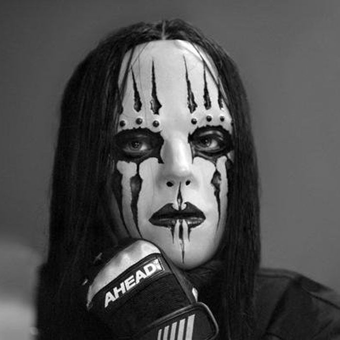

Nathan Jonas "Joey" Jordison foi um músico, compositor e produtor musical norte-americano. Ele é conhecido por ter sido o primeiro baterista e co-fundador da banda de nu metal Slipknot, no qual foi designado como #1, além de ter sido guitarrista na banda de horror punk Murderdolls.